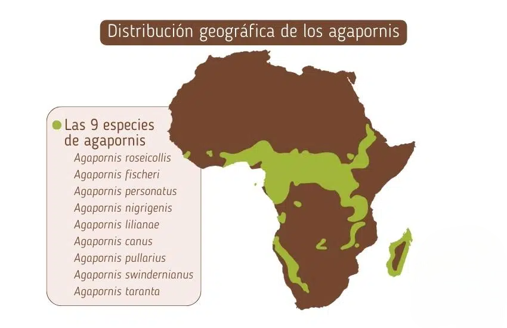
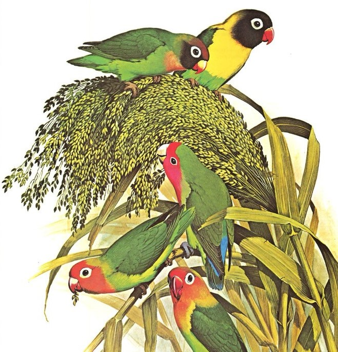

Aunque pueda parecernos que llevan toda la vida con nosotros, no es exactamente así. El descubrimiento de esta maravillosa especie de aves se dio en África a raíz de la colonización por parte de los principales países europeos.
Si bien en 1788 ya se había descubierto el Agapornis canus en la isla de Madagascar, estos fueron documentados por primera vez por científicos europeos en el siglo XIX, cuando exploradores y naturalistas comenzaron a estudiar la fauna africana.
El zoólogo francés François Le Vaillant fue uno de los primeros en describir a los agapornis en el año 1793, aunque sin clasificarlos formalmente y finalmente en el año 1817 el naturalista británico George Kearsley Shaw describió y nombró científicamente a la primera especie: Agapornis pullarius. Casi 20 años despues el Agapornis roseicollis, una de las especies más populares, fue descrita por el ornitólogo Wilhelm Peters. Con el tiempo, se identificaron 9 especies dentro del género Agapornis, distribuidas en diferentes regiones de África y Madagascar.
La exploración del continente africano dio lugar al descubrimiento del resto de especies de agapornis. Evidentemente para la población africana eran animalitos bien conocidos desde mucho tiempo atrás, el descubrimiento fue solo a ojos de los europeos
Estos pequeños amigos tardaría 150 años en llegar hasta Europa: sería un zoólogo alemán, Carl Hagenbeck, quien fascinado por ellos decidió traer algunos ejemplares para estudiarlos de cerca en 1973.
La primera especie en reproducirse en cautividad (fuera de África), fue Agapornis canus, en 1860, en el Zoológico de Londres. A partir de 1926 empezaron a criarse Agapornis fischeri en Estados Unidos. Con el tiempo, a lo largo de siglo XX se fueron popularizando como mascota debido a su pequeño tamaño, facilidad de cría, colores llamativos y comportamiento afectuoso
En la década de 1920, criadores comenzaron a experimentar con mutaciones genéticas, dando lugar a variedades de colores distintas a las que existen en la naturaleza y en la actualidad son una de las aves más populares en la avicultura, con cientos de mutaciones de color y una comunidad de criadores alrededor del mundo.
Los agapornis pertenecen a la familia Psittaculidae, que también incluye periquitos y otros loros pequeños de África y Asia. Este grupo es uno de los 3 en los que los loros se diversificaron luego de la separacion de los continentes a como los conocemos hoy en dia.
Se cree que estas aves evolucionaron en África a partir de un ancestro común con otros loros pequeños hace 2-5 millones de años. A lo largo del tiempo:
Las diferencias entre especies sugieren que algunos agapornis evolucionaron para vivir en áreas más húmedas (Agapornis pullarius, por ejemplo), mientras que otros se adaptaron a regiones áridas (Agapornis roseicollis en Namibia). Su comportamiento social y su tendencia a formar lazos de pareja fuerte (de ahí el nombre "inseparables") pueden haber sido clave para su supervivencia.
Como se menciono antes, desde el siglo XIX, los agapornis han sido criados en cautiverio, lo que ha dado lugar a mutaciones de color y cambios en su comportamiento. En la naturaleza, los colores predominantes son verdes para camuflarse, pero en cautiverio han surgido variedades azules, amarillas, blancas y entre otros, ya que estos colores no influyen en su supervivencia.
A nivel evolutivo, estos cambios en colores no afectan su capacidad de supervivencia, pero muestran cómo la domesticación puede alterar características naturales en una especie.
